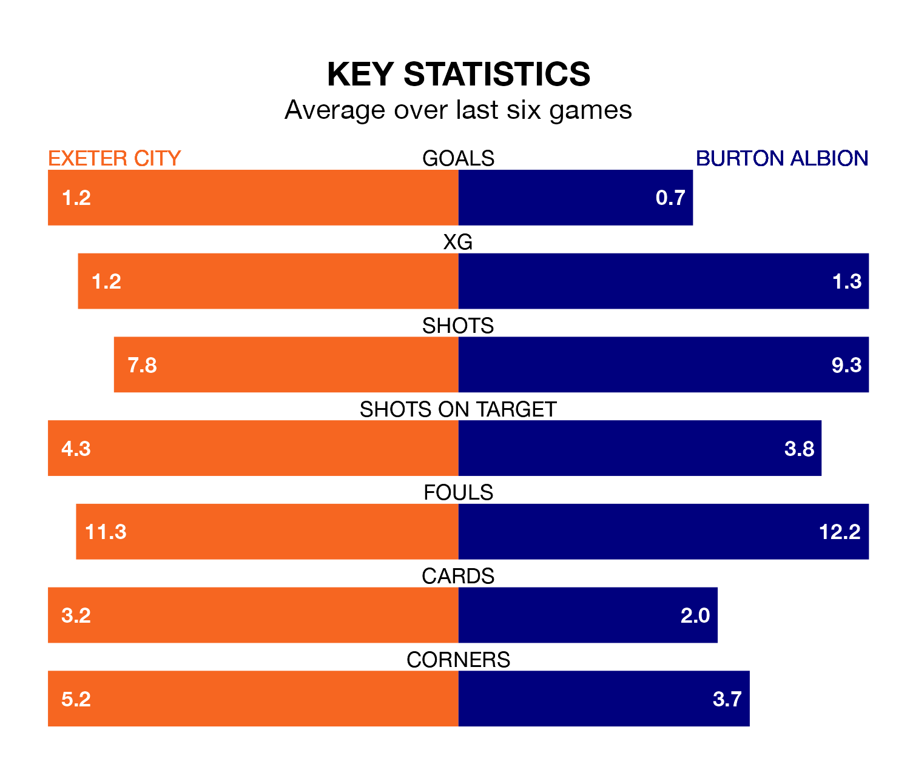

Burton Albion travel to St James Park looking to secure a first win in six EFL League One games against Exeter City on Saturday.
The Brewers have lost four and drawn one matches since they last earned three points – against Leyton Orient on February 17.
They face an Exeter side who have won one and drawn two over that time.
Burton are 19th in the table after 37 games, of which they have won 10 and drawn nine, earning 39 points.
Exeter are two places ahead of Albion in 17th, with 12 wins and eight draws putting them on 44 points.
In the last three years, Exeter and Burton have played each other on three occasions. Exeter won one of them and Burton the other.
Their last meeting was on September 2, when Exeter won 1-0 away.
With 31 goals in 37 games so far this season, the Brewers are the league's third-lowest scorers with 0.8 goals per game. And they are conceding at an average rate, letting in 49 goals at a rate of 1.3 per game.
City are also below average scorers, with 0.8 goals per game, compared to a league average of 1.3. They have conceded 1.4 goals per game.
Exeter's last match was on Tuesday, a 3-0 win against Shrewsbury Town, with Jack Aitchison, Luke Harris and Will Aimson getting the goals for Exeter.
Burton lost 2-1 against Portsmouth last time out, also on Tuesday, with John Brayford on the scoresheet.
Saturday's match will be refereed by Martin Woods, who has taken charge of nine EFL League One games so far this season, issuing one red card and booking 38 players. He has awarded one penalty.
The last Exeter game Woods refereed was a 1-0 home win against Cheltenham Town on September 16. His last Burton match was their 3-0 loss away at Oxford United on December 16.
Updated: 15:10 (UTC), 15/03/24